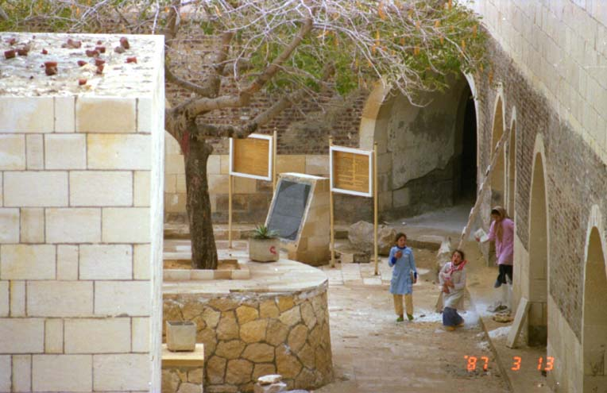

２６．「サハラ、ロゼッタはどこにあるの？」(写真あり)
エジプトに赴任して間もなく分かったことがある。アレキサンドリア、カイロは英語名であった。アラビア語ではイスカン
ダリア、カヒーラである。ある日の晩数人でサハラ砂漠に行ってみよう言うことになった。皆の気持ちは地図に書かれている
多少奥地のサハラ砂漠の近くに行けば良いという気持ちであったと思う。運転手にサハラ・デザートに行くように話す。運転
手は「オ！サハラ」と言って何となく困ったような感じであった。兎に角車を発進し、一路サハラ砂漠へ。車はアレキサンド
リアから海岸線を平行に西に進む。何故かヘッドライトをつけずに時速６０キロ位で走る、日本人は全員恐がりヘッドライト
をつけるように何度も言うが、一向につけようとしないし対向車もつけていない、道路を時々人が横断している！。何度も日
本人が点灯するように話すと、やっとヘッドライトをつけたが今度は日本人が暗いところに目が慣れてしまったので眩しくて
前を見られなくなった、と思った頃に運転手はヘッドライトを消した。月明かりでも目が慣れると結構見える物であり、並木
の下半分がペンキで白く塗られており道路幅も分かりやすい。この白い幹のせいでヘッドライトをつけると反射し眩しいこと
も分かった。
（写真は運転手のサブリさん）
そうこうしていると車はやっと左折しサハラ砂漠に向かい始めたようである。途中で休憩する。誰かが持ってきた懐中電灯
を照らすと、砂漠を舞っている砂のせいで光の棒が出現した。スタウォーズの光の剣のようになり、天上の星を突き刺すこと
が出来るみたいである。宿舎から持ってきたインスタントコーヒーを飲むと、運転手はガミーラの連発であった。我々は「ガ
ミーラ」は美人の意味と思っていたが、素晴らしい、美味しい、綺麗の意味があることが分かった。再出発する、車は南下を
止めて東に向かい始める、南下すればサハラ砂漠に到達すると信じている我々は南下する分岐点を見つけては盛んに右折する
ように話すが、運転手は「サハラ、ＯＫ」と連発する。その内にカイロからアレキサンドリアに向かう砂漠道路と称する高速
一般道路に出る。そして一目散にガソリンスタンドに入り、ガソリンを入れ始めた。入れは入れる、空っぽに近かったようで
ある！全員これで砂漠に入ったらと思うと肝を冷やしてしまった。そして、サハラ砂漠に行くのに何故ガソリンを沢山入れて
おかなかったと責め始めた。運転手は必死に、「俺はサハラに連れて行ったから問題ない」と言い始めた。え？サハラ砂漠に
入っていたの？。話を続けるとサハラとは砂漠の意味で砂地の所がサハラらしい、従ってサハラ砂漠とは砂漠砂漠であったの
である。
下写真中央左の黒いのがロゼッタストーン・イミテーションである。

それからしばらくして今度はロゼッタに行こうと言うことになる。運転手にロゼッタに行ってくれと話すと、運転手は知ら
ないと言う。ナポレオンが見つけたロゼッタストーンが出たところ、シャンポリオンが解読したロゼッタストーンと話してい
たら、「おー！エル・ラシット」と言った。ロゼッタも英語名か何かでアラビア語ではエル・ラシットである。現地に到着し
たらロゼッタストーンが見つかった処は公園みたいになっており、壁で囲まれていた。ロゼッタストーンはコンクリートでし
っかり固定されていた。後で分かったことであるが、友人が以前訪れたときにはこのロゼッタストーンは転がっていて、軽く
て持ち上げられたと話し笑っていた。プラスチック製のイミテーションであった。実物はフランスではなく英国大英博物館に
展示されている。
タイに訪れたときにメナム川が流れていた、案内人にメナム川ですねと言ったら「ヤー、メナム。チャオプラヤ」と言う。
何か別の名前を言ったような気がしてもう一度「メナム川ですね」と言うと同じ言葉が返ってきた。そして分岐している川を
指して「メナム、？？？？」とメナムを言って川の名前を言っているようである。次に支流それぞれさしてメナム、メナムの
連発である。ようするにメナムとはタイ語で「川」の意味であった。今の地図をよく見ると、チャオプラヤ（メナム）と表記
している。昔のはメナムだけである。もしかして、カンボジアに流れているメコンも川の意味ではないだろうか。
してみると、日本人は誰かに意図的にか騙されているような気がする。教える人は騙すつもりではなく、自分の認識不足に
気がつかなかっただけかもしれない。これと同じ問題がやはりあった。「２４章エジプトにはバス停がない」をお読み下さい。
|